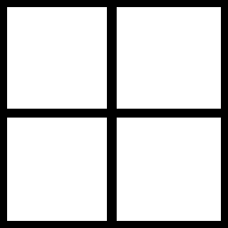
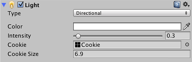

Cookies
In theatre and film, lighting effects have long been used to create an impression of objects that don't really exist in the set. Jungle explorers may appear to be covered in shadows from an imaginary tree canopy. A prison scene often shows the light coming through the barred window, even though the window and indeed the wall are not really part of the set. Though very atmospheric, the shadows are created very simply by placing a shaped mask in between the light source and the action. The mask is known as a cucoloris or cookie for short. Unity lights allow you to add cookies in the form of textures; these provide an efficient way to add atmosphere to a scene.

Creating a Cookie
A cookie is just an ordinary texture but only the alpha/transparency channel is relevant. When you import a cookie, Unity gives you the option to convert the brightness of the image to alpha so it is often easier to design your cookie as a grayscale texture. You can use any available image editor to create a cookie and save it to your project's Assets folder.

When the cookie is imported into Unity, select it from the Project view and set the Texture Type to Cookie in the inspector. You should also enable Alpha From Grayscale unless you have already designed the image's alpha channel yourself.

The Light Type affects the way the cookie is projected by the light. Since a point light projects in all directions, the cookie texture must be in the form of a Cubemap. A spot light should use a cookie with the type set to Spotlight but a directional light can actually use either the Spotlight or Directional options. A directional light with a directional cookie will repeat the cookie in a tiled pattern all over the scene. When a spotlight cookie is used, the cookie will appear just once in the direct path of the "beam" of the light; this is the only case where the position of a directional light is important.

Applying a Cookie to a Light
When the texture is imported, drag it to the Light's Cookie property in the inspector to apply it.

The spot light and point light simply scale the cookie according to the size of the cone or sphere. The directional light has an additional option Cookie Size that lets you scale the cookie yourself; the scaling works with both Spotlight and Directional cookie types.
Uses of Cookies
Cookies are often used to change the shape of a light so it matches a detail "painted" in the scene. For example, a dark tunnel may have striplights along the ceiling. If you use standard spot lights for illumination then the beams will have an unexpected round shape but you could use cookies to restrict the lights to a thin rectangle. A monitor screen may cast a green glow onto the face of the character using it but the glow should be restricted to a small box shape.
Note that a cookie need not be completely black and white but can also incorporate any grayscale level. This can be useful for simulating dust or dirt in the path of the light. For example, if a game scene takes place in a long abandoned house, you could add atmosphere by using "dirty" cookies with noise on the windows and other light sources. Similarly, car headlight glass usually contains ridges that create "caustic" patterns of slightly lighter and darker areas in the beam; another good use for a cookie.